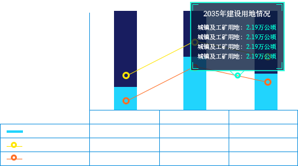
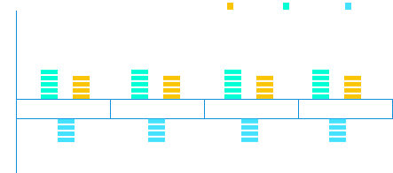
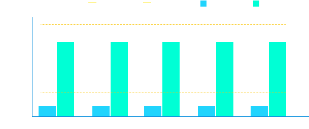

评估考核
评估考核 张家口市
XX区—土地利用规划和现状
张家口市是河北省下辖地级市，又称“张垣”“武城”，位于河北省西北部，是冀西北地区的中心城市，连接京津、沟通晋蒙的交通枢纽。嘉靖八年（公元1529年）守备张珍在北城墙开一小门， 曰“小北门”，因门小如口，又由张珍开筑，所以称“张家口”。
- 单位：万公顷 现状 规划
- 农用地 ------------------- 8.91 10.00
- 农用地 ------------------- 8.91 10.00
- 农用地 ------------------- 8.91 10.00
- 农用地 ------------------- 8.91 10.00
- 农用地 ------------------- 8.91 10.00
- 农用地 ------------------- 8.91 10.00
- 农用地 ------------------- 8.91 10.00
- 农用地 ------------------- 8.91 10.00
- 农用地 ------------------- 8.91 10.00
- 农用地 ------------------- 8.91 10.00
- 农用地 ------------------- 8.91 10.00
- 农用地 ------------------- 8.91 10.00
- 农用地 ------------------- 8.91 10.00
土地利用规划和现状
张家口市是河北省下辖地级市，又称“张垣”“武城”，位于河北省西北部，是冀西北地区的中心城市，连接京津、沟通晋蒙的交通枢纽。嘉靖八年（公元1529年）守备张珍

土地供应
张家口市是河北省下辖地级市，又称“张垣”“武城”，位于河北省西北部，是冀西北地区的中心城市，连接京津、沟通晋蒙的交通枢纽。嘉靖八年（公元1529年）守备张珍在北城墙开一小门 ，曰“小北门”，因门小如口，又由张珍开筑，所以称“张家口”。

| 已供应土地情况统计 | |||
|---|---|---|---|
| 宗地数（宗） | 面积（公顷） | 成交价款（亿元） | |
| 商服用地 | 111 | 111 | 111 |
| 住宅用地 | 634 | 634 | 634 |
| 工矿仓储用地 | 88 | 88 | 88 |
| 其他 | 256 | 256 | 256 |
| 总计 | 1198 | 1198 | 1198 |
土地供应
总量控制
张家口市是河北省下辖地级市，又称“张垣”“武城”，位于河北省西北部， 是冀西北地区的中心城市，连接京津、沟通晋蒙的交通枢纽。嘉靖八年（公元1529年）守备张珍在北城墙开一小门，曰“小北门”， 因门小如口，又由张珍开筑，所以称“张家口”。

| 2018年 | 2025年 | 2035年 | ||
|---|---|---|---|---|
| 农用地 | 耕地面积 | 23.04 | 23.04 | 23.04 |
| 林地面积 | 5.84 | 5.84 | 5.84 | |
| 园地面积 | 8.15 | 8.15 | 8.15 | |
新增建设用地增量控制
-
当前累计
-
当前累计
-
当前累计